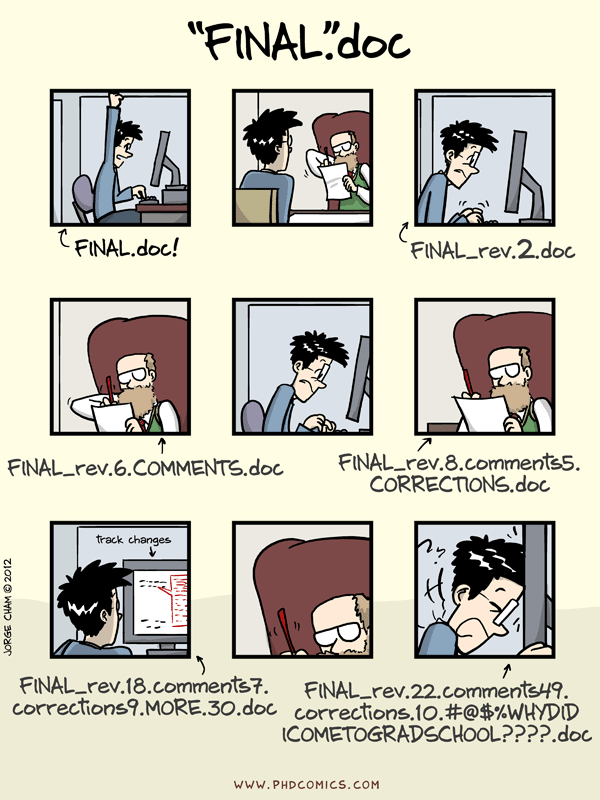

gitIt’s simply a text-based way to communicate with your computer
Offers direct control over your computer
Enables complex tasks and automation that are not easily achievable through graphical interfaces
pwd: print working directory
ls: list files/folders (in your current directory)
cd: change directory (e.g. cd .. goes up one level)
mkdir: make directory (i.e. create a new folder)
touch: create an empty file (often used for quick testing)
cp: copy a file/folder to a specific location
mv: move (cut) a file/folder
rm: remove a file/folder
Version control records changes to files over time (snapshots)
Why? So we can recall specific versions later
Rather than doing this…

Collaboration
Reverting
Tracking changes/history
Git is a distributed version control system
This means that everyone working on a project has a complete copy of the project’s history on their own computer
Distributed nature of Git: if one’s computer crashes, the project history is safe because everyone else has a copy
Git and GitHub are NOT the same (just like R and RStudio…)
Git: the tool itself, does the actual work
GitHub: website that hosts Git repositories, built around Git (think of it as a place to store and share your Git projects)
Alternatives to GitHub: GitLab, Bitbucket (but GitHub is by far the most popular)
We can create or turn an existing directory/folder into a Git repository
To turn a folder into a git repository, open your terminal, navigate to the desired folder (using cd) and then type:
We can clone a git repository (using a web url)
If we replace <file> by ., then everything that was changed will be staged
To see what’s been staged
Commit messages should be meaningful and descriptive
To see the history of commits (messages, author, date)
.gitignore file.gitignore is a text file that tells Git which files/folders to ignore
Prevent them from being accidentally added to your repository and keeps your commit history clean
Ignore unnecessary files (e.g. large files, derivative files, system-specific files) that clutter your repository
Example .gitignore
**/*.DS_Store
**/*.pdf
data/git pull before you start editing a file to avoid conflicts
Branches: see here